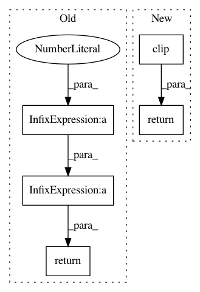

ce96b03b07a4a4bdd851aa84493c616cd291aff2,rllib/examples/env/mbmpo_env.py,HopperWrapper,reward,#HopperWrapper#Any#Any#Any#,39
Before Change
assert obs.ndim == 2 and action.ndim == 2
assert obs.shape == obs_next.shape and action.shape[0] == obs.shape[0]
vel = obs_next[:, 5]
ctrl_cost = 1e-3 * np.sum(np.square(action), axis=1)
reward = vel + alive_bonus - ctrl_cost
return np.minimum(np.maximum(-1000.0, reward), 1000.0)
if __name__ == "__main__":
env = HopperWrapper()
After Change
// obs = [cos(theta), sin(theta), dtheta/dt]
// To get the angle back from obs: atan2(sin(theta), cos(theta)).
theta = np.arctan2(
np.clip(obs[:, 1], -1.0, 1.0), np.clip(obs[:, 0], -1.0, 1.0))
// Do everything in (B,) space (single theta-, action- and
// reward values).
a = np.clip(action, -self.max_torque, self.max_torque)[0]
costs = self.angle_normalize(theta) ** 2 + \
0.1 * obs[:, 2] ** 2 + 0.001 * (a ** 2)
return -costs
@staticmethod
def angle_normalize(x):
return (((x + np.pi) % (2 * np.pi)) - np.pi)
In pattern: SUPERPATTERN
Frequency: 3
Non-data size: 5
Instances
Project Name: ray-project/ray
Commit Name: ce96b03b07a4a4bdd851aa84493c616cd291aff2
Time: 2020-10-06
Author: sven@anyscale.io
File Name: rllib/examples/env/mbmpo_env.py
Class Name: HopperWrapper
Method Name: reward
Project Name: microsoft/nni
Commit Name: e3c8552f3cad8b5ab0128a6eb27e3190506fe9d8
Time: 2019-08-04
Author: suiguoxin@gmail.com
File Name: src/sdk/pynni/nni/parameter_expressions.py
Class Name:
Method Name: quniform
Project Name: microsoft/nni
Commit Name: afb4e78c5c9c4782482777fd8587c636711ab2e5
Time: 2019-08-04
Author: suiguoxin@gmail.com
File Name: src/sdk/pynni/nni/gridsearch_tuner/gridsearch_tuner.py
Class Name: GridSearchTuner
Method Name: _parse_quniform